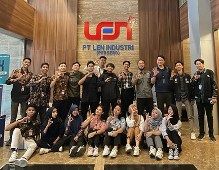
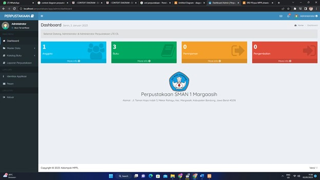

Tentang Saya
Selamat datang di portofolio saya.
Saya adalah seorang mahasiswa tingkat akhir dengan jurusan Teknik Informatika
dan memiliki ketertarikan pada bahasa Programming, IT Support dan Web Developer.
Keterampilan yang saya miliki dapat bekerja sama dengan tim, pekerja keras, dapat berkomunikasi dengan baik,
dan mengembangkan keahlian dalam bidang IT.
Pengalaman

IT Infrastructure - Operation Intern | PT Len Industri (Persero)
Pada program ini saya ditempatkan pada divisi IT Infrastruktur dan Operasi untuk kinerja secara umumnya nyaitu penyedia layanan IT dan pengelolaan data server.
Saya berperan dalam troubleshooting dan maintenance infrastruktur jaringan dan operasi di PT. Len Industri (Persero).
Memberikan layanan IT baik dalam hal penyediaan jaringan internet, perbaikan jaringan internet, memberikan layanan media komunikasi,
konfigurasi aplikasi kebutuhan user, installasi jaringan LAN, installasi sistem operasi, dll.
Perlu beberapa komponen tambahan dalam proses pembangunan jaringan komputer agar user dapat menggunakannya secara efisien dan aman.
Komponen tersebut dapat berupa hardware dan software berupa tipe jaringan, topologi jaringan, routing, switching, konfigurasi jaringan, dan installasi jaringan.
August 2023 - Oct 2023
Memastikan komputer yang digunakan dapat berfungsi normal/berjalan seperti seharusnya.
Memastikan bahwa semua komputer yang digunakan oleh pengguna terhubung ke jaringan.
Melakukan pengecekan jika aplikasi-aplikasi yang dipakai berfungsi
Cek dan update sistem operasi dan aplikasi yang dijalankan oleh pengguna.
Bertugas melakukan backup terhadap semua data agar aman dan jika sistem mengalami gangguan, restore
data dari backup system yang ada.
Bertanggung jawab terhadap mesin pendukung semacam printer, scanner dan lain sebagainya.
Melakukan instalasi Software Windows dan Linux
Melakukan pengaturan terhadap browser yang digunakan.
Bertugas juga untuk cek dan perbaiki bila sewaktu-waktu ada masalah pada jaringan komputer.

Membuat Aplikasi Sistem Perpustakaan | SMAN 1 Margaasih
Pada perpustakaan SMAN 1 Margaasih pelayanan transaksi peminjaman dan pengembalian buku masih dilakukan secara manual. Hal ini mengakibatkan keamanan dan keakuratan data kurang terjamin serta membutuhkan waktu yang lama dalam proses pelayanan dan pengolahan data perpustakaan sehingga membuat kinerja petugas perpustakaan menjadi tidak efektif.
Oleh karena itu maka dibutuhkan sebuah sistem informasi perangkat lunak komputer untuk pengelolaan perpustakaan ini. Berdasarkan uraian diatas, untuk memenuhi tugas matakuliah Manajemen Proyek ini, tim kami akan membuat sebuah sistem informasi pelayanan perpustakaan di SMAN 1 Margaasih. Sistem yang akan kami buat juga menggunakan database sehingga semua data akan tersimpan dengan rapi, terjamin keamanan dan keakuratan datanya dan proses pendataan buku dapat dilakukan dengan cepat, tepat dan akurat.
Oct 2022 - Feb 2023
Bersama tim (5 orang) mengembangkan sistem manajemen data perpustakaan
Mempermudah siswa untuk meminjam buku diperpustakaan dengan menggunakan akses handphone
Menggunakan PHP,Mysql,Codeigniter.
Tujuan
Untuk menyusun sebuah sistem informasi perpustakaan yang berbasis komputer secara sistematis, terstruktur, dan terarah sehingga dapat digunakan oleh SMAN 1 Margaasih untuk mengatasi kelemahan sistem manual yang digunakan saat ini.
Dengan adanya sistem informasi perpustakaan, diharapkan dapat mempercepat proses penyelesaian pekerjaan bagian perpustakaan sehingga dapat menghemat waktu dan biaya serta dapat meningkatkan mutu pelayanan yang lebih baik kepada para siswa.
Untuk memenuhi tugas matakuliah Manajemen Proyek.